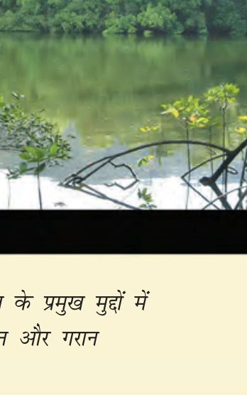
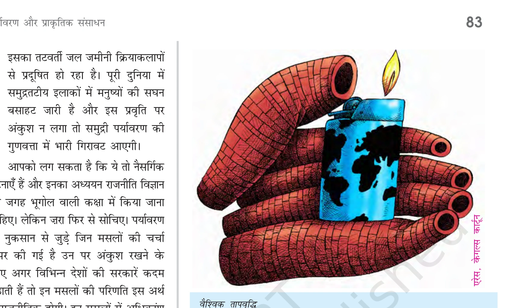
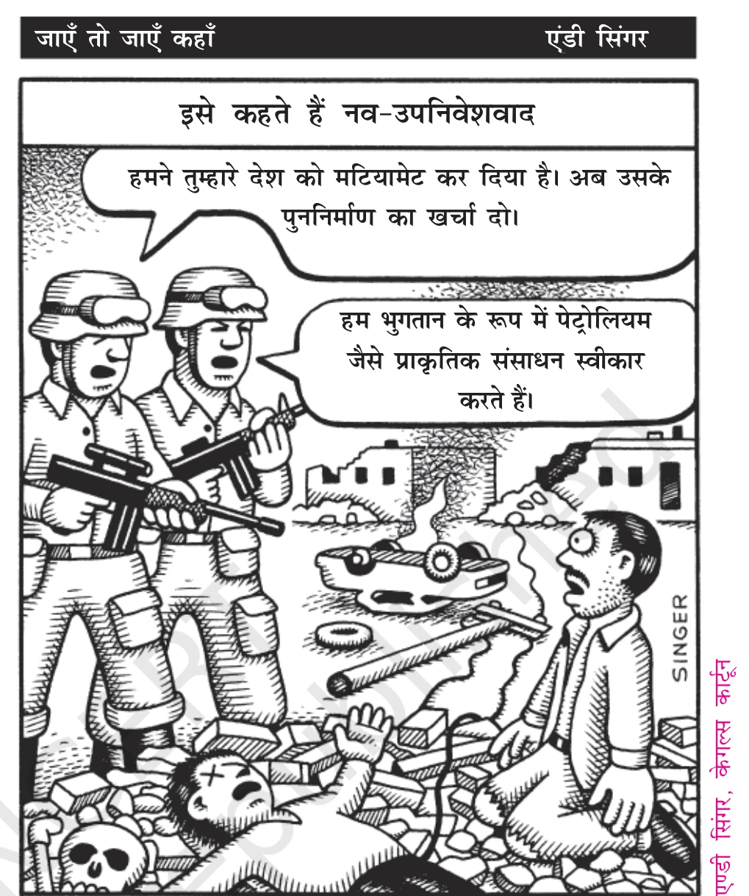
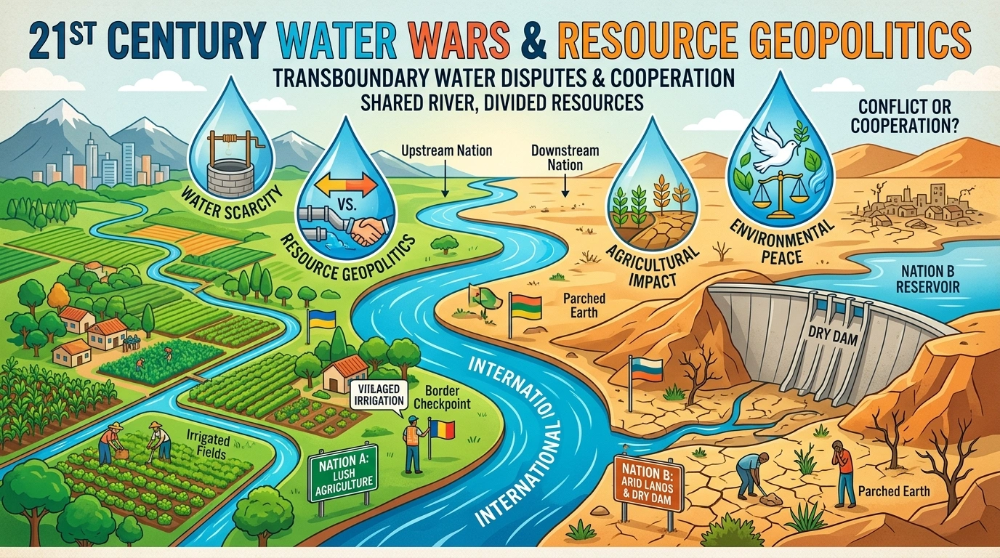
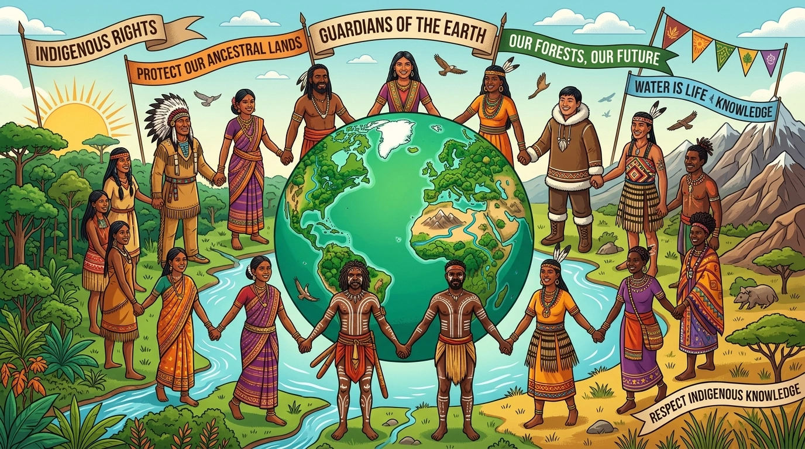
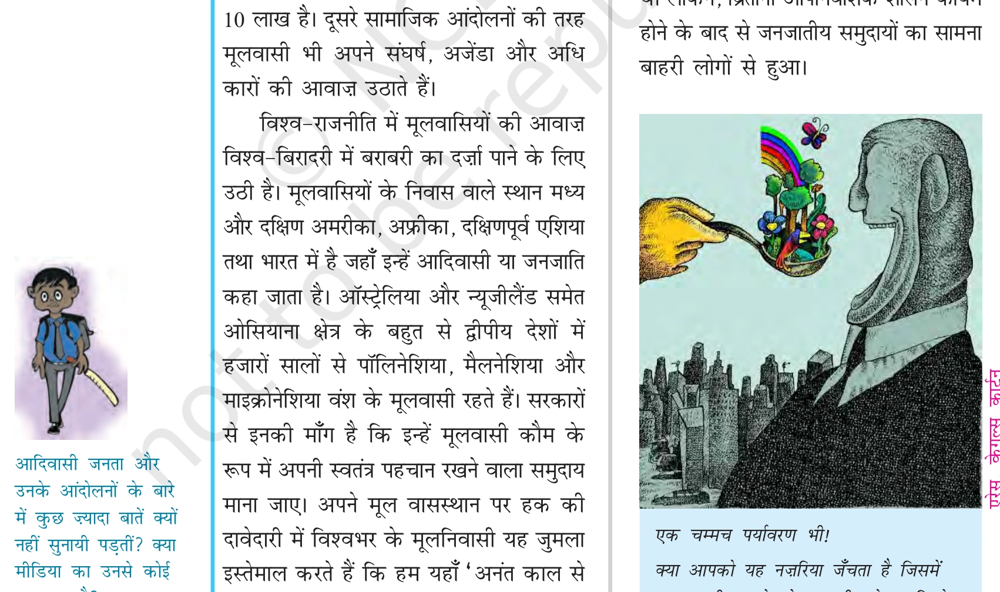

अध्याय 6: पर्यावरण और प्राकृतिक संसाधन - भाग 1 (वैश्विक राजनीति में पर्यावरण की चिंता)
विश्व-राजनीति के बारे में पढ़ते हुए अक्सर हमारा सामना युद्ध, शांति, राज्य शक्ति के उत्थान-पतन और अंतर्राष्ट्रीय संगठनों के मुद्दों से होता है। लेकिन 1960 के दशक से पर्यावरण और प्राकृतिक संसाधनों (Environment and Natural Resources) के मसले ने वैश्विक राजनीति में केंद्रीय स्थान हासिल कर लिया है।


1. वैश्विक राजनीति में पर्यावरण की चिंता के मुख्य कारण
पर्यावरण के मुद्दे किसी एक देश की सीमा तक सीमित नहीं हैं। ये पूरे विश्व समुदाय को प्रभावित करते हैं:
- कृषि योग्य भूमि का ह्रास: विश्व भर में उपजाऊ कृषि भूमि में कमी आ रही है, चरागाह नष्ट हो रहे हैं और जल-स्रोतों का प्रदूषण बढ़ रहा है।
- पेयजल का गंभीर संकट: विकासशील देशों में करोड़ों लोगों को पीने का साफ पानी उपलब्ध नहीं है, जिसके कारण जल जनित बीमारियां फैलती हैं।
- वनों की तेजी से कटाई (Deforestation): वनों की कटाई से जैव-विविधता (Biodiversity) नष्ट हो रही है और जलवायु संतुलन बिगड़ रहा है।
- ओजोन परत का क्षरण (Ozone Depletion): वायुमंडल में समताप मंडल (Stratosphere) में ओजोन परत का पतला होना, जिससे पराबैंगनी किरणें (UV Rays) सीधे पृथ्वी तक आ रही हैं।
- समुद्री प्रदूषण (Coastal Pollution): तटीय क्षेत्रों में मानवीय बस्तियों और औद्योगिक कचरे से समुद्र का पर्यावरण प्रदूषित हो रहा है।


2. 'क्लब ऑफ रोम' और 'अवर कॉमन फ्यूचर' (Brundtland Report)
पर्यावरण सुरक्षा को अंतर्राष्ट्रीय मंच पर उठाने में निम्नलिखित वैश्विक पहलों की महत्वपूर्ण भूमिका रही:
- क्लब ऑफ रोम (Club of Rome 1972): वैश्विक विचारकों के समूह ने 1972 में 'लिमिट्स टू ग्रोथ' (Limits to Growth) नामक पुस्तक प्रकाशित की, जिसने संसाधनों के अति-दोहन पर दुनिया का ध्यान खींचा।
- अवर कॉमन फ्यूचर (Our Common Future 1987): ब्रंटलैंड रिपोर्ट (Brundtland Report) ने चेतावनी दी कि विकास के मौजूदा ढर्रे भविष्य में पोषणीय (Sustainable) नहीं हैं।


अध्याय 6: पर्यावरण और प्राकृतिक संसाधन - भाग 2 (साझी संपदा की सुरक्षा और अंटार्कटिका)
विश्व के कुछ हिस्से और क्षेत्र किसी एक संप्रभु राज्य के क्षेत्राधिकार से बाहर होते हैं। इसलिए उनका प्रबंधन अंतर्राष्ट्रीय समुदाय द्वारा साझा रूप से किया जाता है। इन्हें 'साझी संपदा' (Global Commons) या 'मानवता की साझी विरासत' कहा जाता है।

1. साझी संपदा के चार प्रमुख क्षेत्र (विस्तृत मानचित्र व आरेख)
(i) वायुमंडल और बाह्य अंतरिक्ष (Atmosphere & Outer Space): अंतरिक्ष की सीमा को दर्शाने के लिए पृथ्वी के चारों ओर 100 किमी की ऊँचाई पर एक काल्पनिक रेखा मानी जाती है जिसे 'कर्मन रेखा' (Karman Line) कहते हैं, जिसके बाद बाह्य अंतरिक्ष शुरू होता है।

(ii) अंटार्कटिका महाद्वीप (Antarctica): यह धरती के दक्षिण में स्थित विशाल बर्फ से ढका महाद्वीप है। 1959 की अंटार्कटिका संधि के अनुसार, यह किसी भी देश के अधिकार क्षेत्र में नहीं है। यहाँ भारत के 'मैत्री' और 'भारती' अनुसंधान केंद्र स्थित हैं।

(iii) समुद्र तल और खुला समुद्र (High Seas & India Context): किसी देश के तट से 200 नॉटिकल मील की दूरी (EEZ) के बाद का क्षेत्र 'खुला समुद्र' (High Seas) कहलाता है। भारत के संदर्भ में हिंद महासागर, अरब सागर और बंगाल की खाड़ी के बाहरी हिस्से इसके बड़े उदाहरण हैं।

2. साझी संपदा की सुरक्षा और प्रमुख अंतर्राष्ट्रीय संधियां
साझी संपदा की सुरक्षा के लिए कई महत्वपूर्ण अंतर्राष्ट्रीय समझौते और संधियां की गई हैं:
- अंटार्कटिका संधि (Antarctica Treaty 1959): अंटार्कटिक महाद्वीप पर सैन्य गतिविधियों, परमाणु परीक्षणों और कचरा निपटाने पर रोक लगाती है।
- मॉन्ट्रियल प्रोटोकॉल (Montreal Protocol 1987): ओजोन परत को नुकसान पहुँचाने वाले क्लोरोफ्लोरोकार्बन (CFC) के उत्पादन और उत्सर्जन को रोकने के लिए ऐतिहासिक समझौता।
- अंटार्कटिक पर्यावरण प्रोटोकॉल (Environmental Protocol 1991): अंटार्कटिका को पर्यावरण संरक्षण के लिए एक प्राकृतिक रिजर्व घोषित किया गया।

अध्याय 6: पर्यावरण और प्राकृतिक संसाधन - भाग 3 (साझी परंतु अलग-अलग जिम्मेदारियां और क्योटो प्रोटोकॉल)
वैश्विक पर्यावरण की सुरक्षा को लेकर उत्तरी गोलार्द्ध के अमीर विकसित देशों और दक्षिणी गोलार्द्ध के गरीब विकासशील देशों का दृष्टिकोण अलग-अलग रहा है। इसी मतभेद से 'साझी परंतु अलग-अलग जिम्मेदारियां' (Common But Differentiated Responsibilities - CBDR) का सिद्धांत उभरा।
1. साझी परंतु अलग-अलग जिम्मेदारियां (CBDR) क्या है?
1992 के रियो सम्मेलन की घोषणा पत्र में स्वीकार किया गया कि:
- ऐतिहासिक प्रदूषण की जिम्मेदारी: पर्यावरण में हुए अधिकांश नुकसान के लिए विकसित देश (अमीर देश) जिम्मेदार हैं क्योंकि उन्होंने लंबे समय तक औद्योगिकीकरण करके वैश्विक प्रदूषण फैलाया है।
- विकासशील देशों की स्थिति: विकासशील देशों का औद्योगिकीकरण अभी शुरुआती चरण में है, इसलिए उन पर प्रदूषण कम करने की वैसी ही पाबंदियां लगाना अनुचित होगा जो विकसित देशों पर लगाई जाती हैं।

2. क्योटो प्रोटोकॉल (Kyoto Protocol 1997) और भारत
क्योटो प्रोटोकॉल एक अंतर्राष्ट्रीय समझौता है जो 1997 में क्योटो (जापान) में तय हुआ था:
- ग्रीनहाउस गैसों पर रोक: इसमें कार्बन डाइऑक्साइड, मीथेन, हाइड्रोफ्लोरोकार्बन जैसी गैसों के उत्सर्जन को घटाने का लक्ष्य निर्धारित किया गया।
- भारत की स्थिति (अगस्त 2002): भारत ने अगस्त 2002 में क्योटो प्रोटोकॉल पर हस्ताक्षर किए और इसका अनुमोदन किया।
- विकासशील देशों की छूट: भारत, चीन और अन्य विकासशील देशों को क्योटो प्रोटोकॉल की अनिवार्य बाध्यताओं से छूट दी गई थी क्योंकि औद्योगिकीकरण काल में उनका प्रति व्यक्ति उत्सर्जन बेहद कम था।
अध्याय 6: पर्यावरण और प्राकृतिक संसाधन - भाग 4 (पर्यावरण आंदोलन और भारत का रुख)
पर्यावरण के क्षरण के खिलाफ केवल सरकारें ही काम नहीं कर रही हैं, बल्कि विश्व के विभिन्न हिस्सों में जन-आंदोलन और गैर-सरकारी संगठन (NGOs) भी पर्यावरण संरक्षण की लड़ाई लड़ रहे हैं।

1. प्रमुख पर्यावरण आंदोलन के प्रकार
- वन और संरक्षण आंदोलन: भारत, मेक्सिको, इंडोनेशिया और ब्राजील में जंगलों की व्यावसायिक कटाई के खिलाफ स्थानीय निवासियों और आदिवासियों के आंदोलन।
- खनन और बहुराष्ट्रीय कंपनियों के खिलाफ आंदोलन: कॉर्पोरेट खनन से जल स्रोतों और भूमि के विनाश के खिलाफ विरोध (जैसे बांग्लादेश के फुलबाड़ी में कोयला खनन का विरोध)।
- बांध विरोधी आंदोलन: नर्मदा बचाओ आंदोलन (भारत) और ऑस्ट्रेलिया में फ्रैंकलिन नदी पर बांध निर्माण का विरोध।

2. भारत का पर्यावरण के प्रति रुख
भारत ने पर्यावरण संरक्षण के लिए अंतर्राष्ट्रीय और राष्ट्रीय स्तर पर कई महत्वपूर्ण कदम उठाए हैं:
- 2001 का राष्ट्रीय ऊर्जा संरक्षण अधिनियम: ऊर्जा की बर्बादी को रोकने और नवीकरणीय ऊर्जा को बढ़ावा देने के लिए कानून।
- 2002 का विद्युत अधिनियम: नवीकरणीय ऊर्जा (सौर और पवन ऊर्जा) के इस्तेमाल को कानूनी बढ़ावा दिया गया।
- नेशनल सोलर मिशन (National Solar Mission): भारत ने सौर ऊर्जा उत्पादन को तेजी से बढ़ाया है।
- जी-20 (G-20) सम्मेलन में भारत की भूमिका: भारत ने विकासशील देशों के लिए वित्तीय सहायता और तकनीक हस्तांतरण (Technology Transfer) की मांग उठाई है।
अध्याय 6: पर्यावरण और प्राकृतिक संसाधन - भाग 5 (संसाधन राजनीति, जल युद्ध और मूलवासी अधिकार)
विश्व राजनीति का एक बड़ा हिस्सा प्राकृतिक संसाधनों के कब्जे, बंटवारे और नियंत्रण की होड़ से संचालित होता है। इसे संसाधन राजनीति (Resource Geopolitics) कहते हैं। यूरोपीय ताकतों के औपनिवेशिक प्रसार से लेकर आधुनिक महाशक्तियों के विदेशी अभियानों तक, संसाधनों पर वर्चस्व हमेशा मुख्य चालक रहा है।

1. तेल और पानी की राजनीति (Oil and Water Geopolitics)
आधुनिक वैश्विक अर्थव्यवस्था दो सबसे महत्वपूर्ण प्राकृतिक संसाधनों—पेट्रोलियम (तेल) और जल (पानी)—पर निर्भर है:
- तेल का महत्व (Oil Geopolitics): दुनिया की ऊर्जा की ज़रूरतों का एक बहुत बड़ा हिस्सा तेल से पूरा होता है। पश्चिमी एशिया (खाड़ी देशों) के पास दुनिया का सबसे बड़ा तेल भंडार है, इसलिए यह क्षेत्र हमेशा महाशक्तियों के संघर्षों और सैन्य हस्तक्षेपों का अड्डा बना रहता है। विश्व का 95% परिवहन और औद्योगिक ईंधन पेट्रो-ऊर्जा पर आधारित है।
- जल युद्ध (Water Wars): 21वीं सदी में अंतर्राष्ट्रीय सीमाओं से गुजरने वाली साझा नदियों (जैसे अफ्रीका में नील नदी, मध्य पूर्व में जॉर्डन और दजला-फ़रात नदी) के पानी के बंटवारे को लेकर पड़ोसी देशों के बीच सैन्य संघर्ष की प्रबल आशंका को 'जल युद्ध' (Water Wars) कहा जाता है।



2. मूलवासी और उनके अधिकार (Indigenous Peoples and Their Rights - NCERT पृष्ठ 96 एवं 97 का संपूर्ण अध्ययन)
विश्व राजनीति में पर्यावरण और प्राकृतिक संसाधनों की चर्चा तब तक अधूरी है जब तक मूलवासियों (Indigenous Peoples) के अधिकारों और उनके संघर्षों को शामिल न किया जाए। मूलवासी प्राकृतिक पर्यावरण के सबसे सच्चे रक्षक और सहचर माने जाते हैं।
(A) मूलवासी की संयुक्त राष्ट्र संघ (UN) द्वारा परिभाषा
संयुक्त राष्ट्र संघ (UN) के अनुसार, मूलवासी वे लोग हैं जो:

(B) विश्व भर में मूलवासियों की आबादी और भौगोलिक आंकड़े (NCERT तथ्य)
आज पूरे विश्व में लगभग 30 करोड़ मूलवासी निवास करते हैं। NCERT पाठ्यपुस्तक (पृष्ठ 96) के अनुसार विश्व के विभिन्न क्षेत्रों में इनकी उपस्थिति और आंकड़े निम्नवत हैं:
- बांग्लादेश (चटगांव पर्वतीय क्षेत्र): बांग्लादेश के चटगांव पहाड़ी इलाके में लगभग 6 लाख आदिवासी बसे हुए हैं।
- उत्तर अमेरिका (Native Americans / Red Indians): उत्तर अमरीकी महाद्वीप में मूलवासियों की संख्या 35 लाख है।
- पनामा (कुना मूलवासी): पनामा नहर के पूर्व में 'कुना' (Kuna) नामक मूलवासी जनजाति 50 हजार की संख्या में निवास करती है।
- उत्तरी सोवियत संघ (रूस का साइबेरिया क्षेत्र): उत्तरी सोवियत क्षेत्र में ऐसे मूल निवासियों की आबादी 10 लाख है।
- ओशिएनिया व प्रशांत महासागरीय क्षेत्र: ऑस्ट्रेलिया, न्यूजीलैंड और ओशिएनिया महाद्वीप के कई द्वीपीय देशों में हजारों सालों से पोलिनेशिया, मेलिनेशिया और माइक्रोनेशिया वंश के मूलवासी (एबोरिजिन) रहते आ रहे हैं।
- मध्य एवं दक्षिण अमेरिका: मेक्सिको, पेरू, ब्राजील और अमेज़न घाटी के जंगलों में करोड़ों मूलवासी निवास करते हैं।
(C) मूलवासियों की विश्वदृष्टि, मांगें और 'भूमि का महत्व'
भौगोलिक रूप से भले ही मूलवासी अलग-अलग महाद्वीपों पर फैले हैं, लेकिन भूमि और प्रकृति के प्रति उनकी विश्वदृष्टि (Worldview) आश्चर्यजनक रूप से एक समान है:
- "हम यहाँ अनंतर काल से रह रहे हैं": विश्व भर के मूलवासी अपनी संप्रभुता और वजूद का दावा करते हुए यह जुमला दोहराते हैं कि "हम इस पावन धरती पर अनंतर काल से (शुरुआत से) रहते चले आ रहे हैं।"
- भूमि केवल संपत्ति नहीं, जीवन का आधार है: मूलवासियों के लिए भूमि छीनने का मतलब सिर्फ आर्थिक साधन की हानि नहीं है, बल्कि उनकी पूरी सांस्कृतिक पहचान, परंपरा और अस्तित्व का विनाश है। भूमि की क्षति उनके जीवन के लिए सबसे बड़ा खतरा है।
- स्वतंत्र पहचान की मांग: मूलवासी अंतर्राष्ट्रीय समुदाय और अपनी-अपनी सरकारों से यह मांग कर रहे हैं कि उन्हें एक 'स्वतंत्र पहचान' रखने वाला अलग समुदाय माना जाए।


(D) भारत में मूलवासी (आदिवासी/अनुसूचित जनजाति) और उनकी स्थिति
भारत के संदर्भ में मूलवासी शब्द का प्रयोग 'अनुसूचित जनजाति' (Scheduled Tribes) या 'आदिवासी' के लिए किया जाता है:
- जनसंख्या अनुपात: भारत में आदिवासियों की संख्या कुल राष्ट्रीय जनसंख्या का लगभग 8 प्रतिशत (8%) है।
- कृषि एवं वनों पर निर्भरता: कुछ घुमंतू जनजातियों को छोड़कर, भारत की अधिकांश आदिवासी जनता अपना जीवन-यापन खेती और वनों से मिलने वाली उपज (लाख, गोंद, जड़ी-बूटियाँ) से करती है।
- औपनिवेशिक काल का अत्याचार: ब्रिटिश शासन स्थापित होने के बाद, अंग्रेजों ने वन कानूनों में बदलाव किया। इससे आदिवासियों की जमीनों पर बाहरी लोगों (दिक्सुओं, जमींदारों, साहूकारों) का कब्जा बढ़ा और आदिवासियों को बेदखल होना पड़ा।
- विकास की भारी कीमत (विस्थापन का दंश): यद्यपि भारत के संविधान में आदिवासियों को राजनीतिक प्रतिनिधित्व और आरक्षण की सुरक्षा प्राप्त है, लेकिन आजादी के बाद भारत में चले बड़े विकास प्रोजेक्ट्स (बांध, खदानें, पावर प्लांट, राष्ट्रीय उद्यान) से सबसे ज्यादा विस्थापित होने वाले लोग आदिवासी समुदाय ही हैं। इन्होंने भारत के आधुनिक विकास की बहुत बड़ी और दर्दनाक कीमत चुकाई है।
(E) अंतर्राष्ट्रीय राजनीति में मूलवासियों की आवाज और 'WCIP' (1975)
दशकों तक अंतर्राष्ट्रीय और राष्ट्रीय राजनीति में मूलवासियों की आवाज को अनदेखा किया गया, लेकिन 1970 के दशक से वैश्विक एकजुटता बढ़ी:
- वर्ल्ड काउंसिल ऑफ इंडिजिनस पीपल (WCIP 1975): 1970 के दशक में दुनिया भर के मूलवासी नेताओं के बीच आपसी संपर्क बढ़ा। 1975 में 'वर्ल्ड काउंसिल ऑफ इंडिजिनस पीपल' (World Council of Indigenous Peoples) की स्थापना हुई।
- संयुक्त राष्ट्र संघ (UN) में परामर्शदायी दर्जा: संयुक्त राष्ट्र संघ की सामाजिक और आर्थिक परिषद (ECOSOC) में सबसे पहले WCIP को 'परामर्शदायी संस्था' (Consultative Status) का दर्जा दिया गया। इसके अलावा आदिवासियों के हकों से जुड़े 10 अन्य गैर-सरकारी संगठनों (NGOs) को भी यह दर्जा प्राप्त है।
- वैश्वीकरण विरोधी आंदोलनों में भूमिका: वैश्वीकरण और बहुराष्ट्रीय कंपनियों के अंधाधुंध दोहन के खिलाफ चल रहे अंतर्राष्ट्रीय आंदोलनों में मूलवासियों के अधिकारों की सुरक्षा केंद्रीय मुद्दा बनी हुई है।